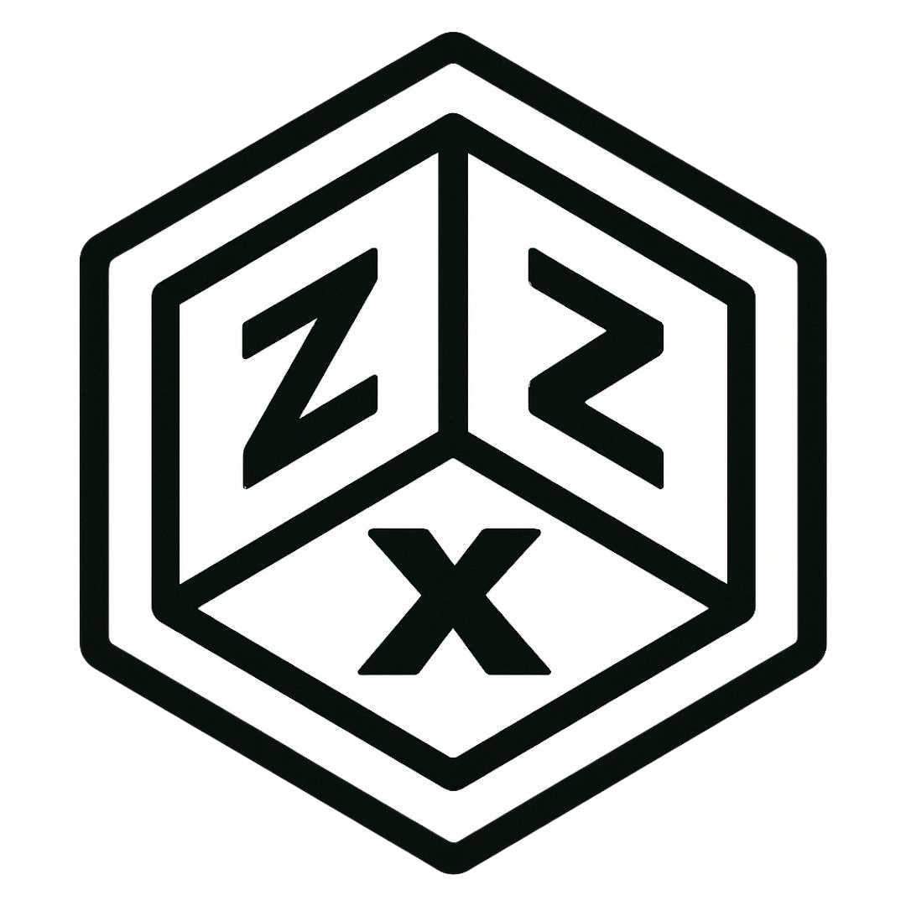

Visual Identity
The design language combines laboratory minimalism, cypherpunk utility, Bitcoin-native signaling, dark terminal aesthetics, and practical research-publishing structure.
ZZX-Labs / Design System
This page documents the visual identity, interface language, brand system, color palette, typography, component behavior, media handling, and frontend architecture used across zzx-labs.io. The design system exists to keep the public site, internal tools, widgets, dashboards, mirrors, portals, documentation, and future service surfaces visually coherent without breaking their functional layers.
ZZX-Labs design is not decoration after engineering. It is part of the engineering. Every page must remain readable, inspectable, modular, security-conscious, and compatible with the site’s shared JavaScript, injected header, Bitcoin ticker, footer, widgets, APIs, tools, and future subpage systems.
Design Doctrine
The site’s design system is built around a strict rule: visual upgrades must never break page topology, widget hooks, script wrappers, injected containers, API surfaces, media players, documentation portals, blog workflows, or project-derived pages. The design layer must unify the site while leaving each tool free to function.
The visual language therefore favors dark panels, restrained borders, monospaced typography, operational clarity, modular cards, conservative spacing, strong contrast, local assets, and repeatable layouts that can scale from a simple mission page to a Bitcoin analytics dashboard or documentation portal.
The design language combines laboratory minimalism, cypherpunk utility, Bitcoin-native signaling, dark terminal aesthetics, and practical research-publishing structure.
Styles are layered through global wrappers and specialized CSS modules. Page-specific design should extend the system without corrupting shared behavior.
The layout must support research, services, tools, APIs, widgets, media, documentation, downloads, legal pages, portals, and project indexes without becoming brittle.
Brand Core
The primary banner and identity mark should use the main ZZX-Labs hexagon logo wherever practical. Older logo variants remain useful as historical assets, alternate marks, favicon/icon sources, or design archive material, but the hexagon banner identity should be treated as the current standard for the public site.

Current primary logo for public-facing identity, top-level pages, README headers, and brand standardization.

Typographic logo for banner contexts, document headers, publication covers, and visual identity compositions.

Bitcoin-native support mark for donation, payments, BPI widgets, mining research, and Bitcoin infrastructure pages.
Palette
Core brand colors are defined through the site’s theme variables and may also be reflected in
static/colors.json. Buttons, hover states, cards, highlights, widgets, and utility classes
should derive from this palette rather than hardcoding unrelated colors.
"primary": "#e6a42b"
"accent": "#c0d674"
"background": "#282828"
"text": "#d1d1d1"
{
"primary": "#e6a42b",
"accent": "#c0d674",
"background": "#282828",
"surface": "#333333",
"surface_alt": "#444444",
"text": "#d1d1d1"
}Typography
ZZX-Labs uses monospaced typography to reinforce an engineering-first interface. The preferred body font is IBM Plex Mono. The custom header font, where available, should be used selectively for identity moments rather than dense reading.
{
"primary": "IBM Plex Mono",
"heading": "Adult Swim Font",
"fallback": "monospace"
}@font-face {
font-family: 'Adult Swim Font';
src: url('../static/fonts/Adult-Swim-Font.ttf') format('truetype');
font-weight: normal;
font-style: normal;
}
body {
font-family: 'IBM Plex Mono', monospace;
}Headers should be direct, technical, and scannable. They should orient the visitor quickly and avoid vague marketing language.
Paragraphs should explain function, purpose, policy, and context. The tone should be precise, research-oriented, and operational.
Code examples should remain readable, syntax-highlighted where useful, and wrapped in stable containers that do not disrupt mobile layout.
Panels divide major ideas without forcing every page into a different design pattern. They are the basic page unit for consistency.
Cards are used for small repeated concepts, feature lists, service summaries, design elements, and dashboard-adjacent content.
Buttons should be reserved for real navigation or user action. They should not be decorative labels.
The navbar and hamburger menu are handled through shared header injection, responsive layout, and minimal
JavaScript toggling. Page redesigns must preserve the zzx-header target.
<header>
<div id="zzx-header"></div>
</header>The injected header, Bitcoin ticker, and footer are part of the site’s operating surface. These IDs must remain stable across redesigns.
<div id="zzx-header"></div>
<div id="ticker-container"></div>
<div id="zzx-footer"></div>Historical marks and alternate logo assets remain useful for documentation, design studies, project archives, and brand evolution. The current standard should favor the main banner hexagon logo.


The landing hero uses high-contrast text, strong identity language, and a restrained dark presentation. It should remain responsive and readable before animation or media effects are considered.
.zzx-page-hero {
position: relative;
overflow: hidden;
}
.zzx-page-hero h1 {
color: var(--brand-green);
}Scroll-triggered animations should be progressive enhancement only. Content must remain readable without animation and should respect reduced-motion preferences.
.scroll-animation {
opacity: 0;
transform: translateY(20px);
transition: opacity 0.6s ease-out, transform 0.6s ease-out;
}
.scroll-animation.in-view {
opacity: 1;
transform: translateY(0);
}The inspiration grid can use shuffled color classes, but the system should avoid adjacent duplicates, maintain contrast, and remain readable under dark-theme conditions.
function shuffle(array) {
for (let i = array.length - 1; i > 0; i--) {
const j = Math.floor(Math.random() * (i + 1));
[array[i], array[j]] = [array[j], array[i]];
}
}
Icons should be stored locally in static/icons/. Future support may include inline SVG,
custom icon fonts, signature badges, verification marks, and project-specific icon packs.
<img src="../static/icons/lock.svg" alt="Lock Icon" class="icon">Buttons should use consistent visual behavior across CTAs, internal navigation, service pages, and tool dashboards.
.btn {
background-color: #e6a42b;
color: #000;
padding: 0.8rem 1.5rem;
border-radius: 4px;
text-decoration: none;
transition: background-color 0.3s ease;
}Alerts should be used sparingly for warnings, successful operations, errors, status reports, and temporary notices. They must remain readable in the dark theme.
ZZX-Labs provides curated streaming .m3u radio playlists in
static/audio/radio/. These feeds may be used internally for lab ambiance and broadcast
automation.
Original music compositions, ambience loops, and soundtrack elements are stored in
static/audio/tracks/. These can be embedded across the frontend or streamed through a
player.
Alert sounds for ZIRA, terminals, admin panels, analytics dashboards, and lab tools are stored in
static/audio/alerts/. Default format is 320kbps MP3.
Static .mp4 videos embedded or used in visual media across ZZX-Labs are stored in
static/video/videos/. These may also support OBS overlays and archival clips.
Live stream feeds may be served over WebRTC, HLS, or HTTP-based streams routed from local infrastructure. These are intended for admin observation, studio cameras, or livestream integration.
Frontend Layers
The site uses wrappers so the root stylesheet and script loader can aggregate specialized modules without every page needing to know every submodule. This lets page-specific systems exist locally while shared design remains unified.
<link rel="stylesheet" href="../static/styles.css">
<script src="../static/script.js" defer></script>Specialized pages may add local files after the global wrappers when the page has unique behavior, such as key-history dashboards, tool UIs, documentation viewers, or API consoles.
Design Services
ZZX-Labs specializes in zero-trust design systems, visual security UX, cryptographic user-interface architectures, Bitcoin-native dashboards, static-first publishing, frontend/backend development, branding, deployment, and maintainable documentation systems.
Whether the project is a minimalist portfolio, research archive, data dashboard, Bitcoin analytic portal, internal tool, public API surface, embedded firmware GUI, or media-heavy laboratory system, the design must remain useful under operational pressure.
Ongoing System
This design framework is part of the ongoing maintenance of zzx-labs.io. The site evolves through pages, widgets, tools, APIs, docs, research, papers, downloads, and project-derived systems. The mission is to make that growth coherent without flattening the technical complexity underneath it.